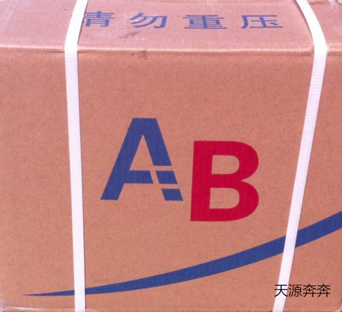
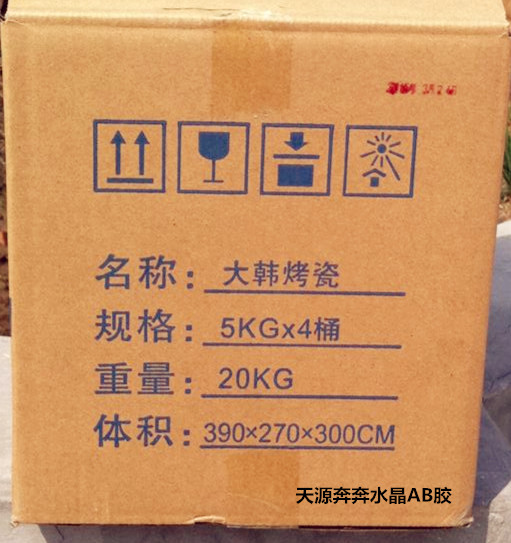
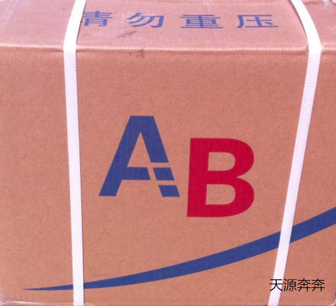
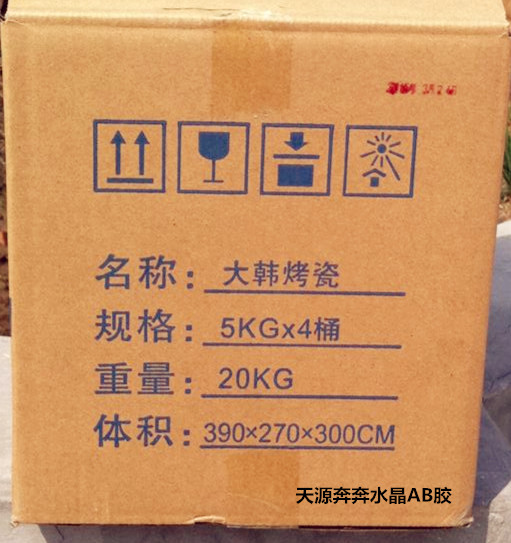
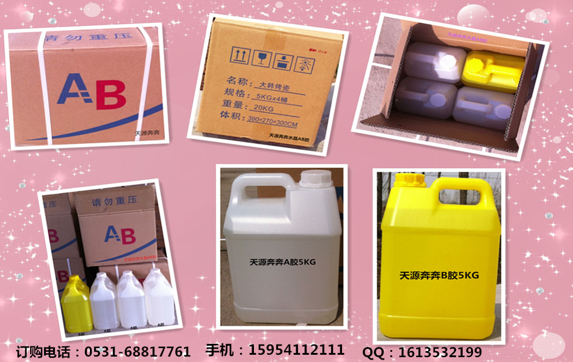
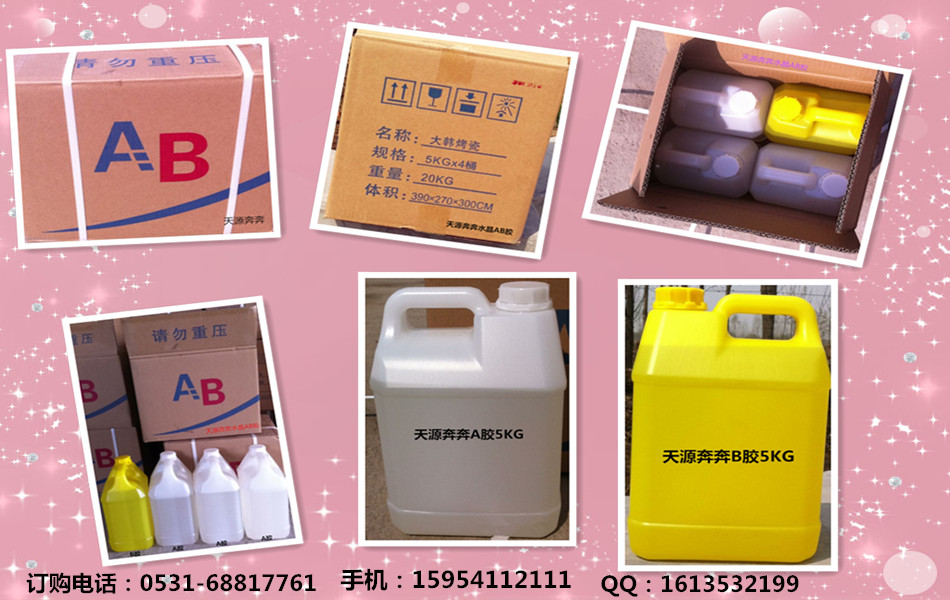

产品介绍
大韩水晶ab胶 水晶胶 是一款高透明高硬度的水晶AB胶，此款水晶胶可用于饰品的包裹，能使外观更漂亮，防水防尘，水晶胶固化后表面光泽度高 ，且无色无味，耐黄变时间长，不仅适用于晶美金的使用，还适用于各种琥珀、发光字、相框、工艺品、标牌等产品使用， 优越消泡性能以及很好的流动性，让水晶胶的档次瞬间提高。 采用国外进口高端树脂原材料研发而成，高透明环氧水晶胶的主要特性是透明度高、光泽亮丽、耐黄变长、自动消泡、不易碎、低粘度、收缩率低，不受低高温影响。 粘度A/B：2000/300 硬度：邵氏D 85 耐高低温：-30℃-100℃
无影胶（uv胶）又称光敏胶、紫外光固化胶，无影胶是一种必须通过紫外线光照射才能固化的一类胶粘剂，它可以作为粘接剂使用，也可作为油漆、涂料、油墨等的胶料使用。UV是英文Ultraviolet Rays的缩写，即紫外光线。 紫外线(UV)是肉眼看不见的，是可见光以外的一段电磁辐射，波长在110~400nm的范围。无影胶固化原理是UV 固化材料中的光引发剂（或光敏剂） 在紫外线的照射下吸收紫外光后产生活性自由基或阳离子，引发单体聚合、交联化学反应，使粘合剂在数秒钟内由液态转化为固态。
产品特性
产品外观无色无刺鼻味、环保无毒，使用时间长，自消跑、自流平、不加温也能干透，一款胶水同时2：1和3：1都可以固化完美，固化后无色透明、无波纹、超亮度、无窝点、高硬度。 固化后抗刮伤，抗黄变时间长大数年。 欢迎来电咨询 0531-68817761 / 15954112111 / 15106998883
应用领域
特别做相册滴胶很理想以及工艺品等产品的表面披覆和滴胶；其它产品如大理石、工艺品、陶瓷、五金、塑胶、电子、木材等产品的表面滴胶。其它硬质产品的表面封装；不适用于有弹性或软质产品的表面滴胶。
常见问题
水晶AB胶和大韩AB胶使用过程出现气泡怎么办？ 首先，水晶AB胶的制作最好是选择无溶剂的水晶ab胶，因为物理方面的性能，很容易会造成气泡的产生，所以要防止气泡的产生要从根源上解决问题。 其次，制作的时候温度不要太低，在温度低的情况下很容易会出现很多的问题，加温的时候气泡才会得以释放，所以温度也是一个考虑的要点。 最后，水晶AB胶的粘性问题，如果粘度太大的话，里面的胶太密集了，气泡就不容易排出来，所以最好是选择粘度相对低一些的水晶ab胶会好很多。 山东济南天源在上面介绍了水晶AB胶和大韩AB胶使用过程出现了气泡时怎么办；平时在运输，储藏的时候也要注意，即使做好的产品， 在使用的时候也是不可忽视的会产生一定的气泡，因此一定要注意以上提到的几点问题。 欢迎来电咨询 0531-68817761 / 15954112111 / 15106998883
清洗方法
清洗的三种方法： 方法一：如果胶水还没有干，可以用酒精、酮类如丁酮、丙酮等溶剂擦除。如果胶水干了，现在市面上有很多环氧胶溶解剂，您可以找些供应商联系下，看哪种产品适合。 方法二：用郡仕稀释液（模型用的蓝瓶的）用棉签沾着这个搽，呆3、4秒用水洗就掉（个试过），头天的胶痕（非手上的，呆4、5秒也能掉，一擦就能趁稀释液没干就行）PS：＜建议如果是彩色的衣服等上，擦的时候小力，本身颜色可能也会掉；此稀释液是石油一类产品,用后用水多洗几遍手。 方法三：加热的方式比较简单，趁热清除。
 



 

济南天源奔奔有限公司是一家以经营环氧树脂AB胶为主的生产型企业，公司工厂位于山东省济南市， 主要经营大韩水晶胶、AB胶、透明胶，大韩烤瓷胶。
天园生产的大韩AB胶水晶胶产品，自消泡，自流平，高透明，高硬度，保证三年不黄变！ 一改传统AB胶不易干燥、易产生气泡、易黄变等弊端，开创了环氧树脂AB胶的新时代。
天园AB胶深知创新是立足之本、诚信乃经营之道，本着科技创造未来、技术成就领先的指导思想， 苛求卓越的产品品质，坚持技术进步、不断创新、不断超越，目前已经成为一家在化工行业颇具实力和规模的企业，屹立于AB胶行业前沿！ 您的满意就是我们的追求！欢迎广大企业、用户和消费者与我们联系，我们将本着用最好的产品， 为用户提供最好的服务为宗旨，竭诚为您服务！现诚招各区域经销商，真诚期待与您合作!
您的满意就是我们的追求！欢迎广大企业、用户与我们联系，我们将本着用最好的产品，为用户提供最好的服务为宗旨，竭诚为您服务！ 现诚招全国各区域代理经销商，真诚期待与您合作！
企业电话：0531-68817761 / 15954112111 / 15106998883 企业传真：0531-68817761